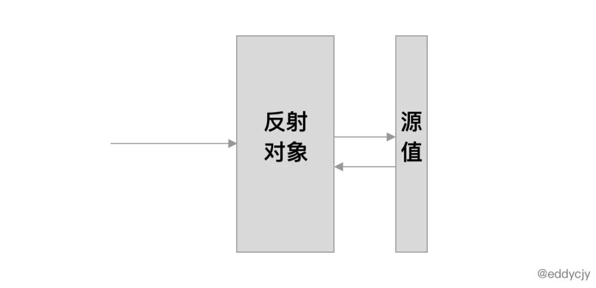
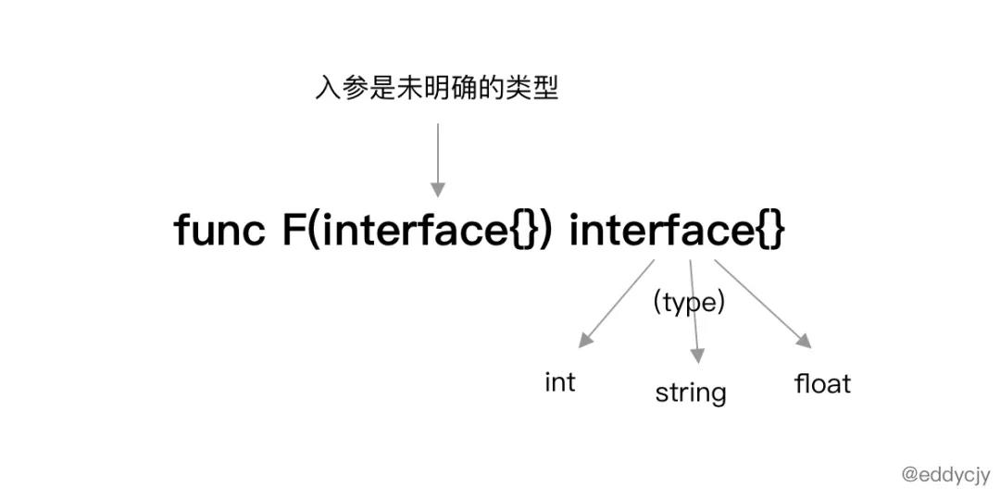
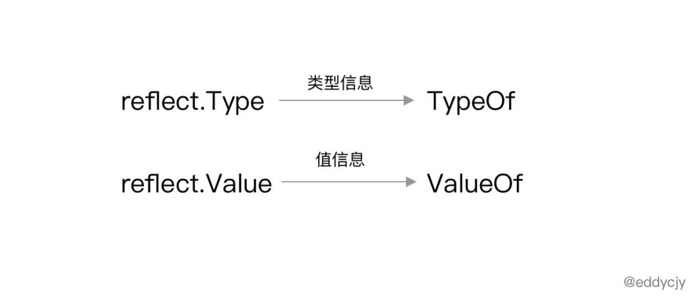

解密 Go 语言之反射 reflect
大家好，我是煎鱼。今天是 2020 年的最后一天，让我们一起继续愉快的学习吧 ：）。
在所有的语言中，反射这一功能基本属于必不可少的模块。
虽说 “反射” 这个词让人根深蒂固，但更多的还是 WHY。反射到底是什么，反射又是基于什么法则实现的？
今天我们通过这篇文章来一一揭晓，以 Go 语言为例，了解反射到底为何物，其底层又是如何实现的。
反射是什么
在计算机学中，反射是指计算机程序在运行时（runtime）可以访问、检测和修改它本身状态或行为的一种能力。
用比喻来说，反射就是程序在运行的时候能够 “观察” 并且修改自己的行为（来自维基百科）。

简单来讲就是，应用程序能够在运行时观察到变量的值，并且能够修改他。
一个例子
最常见的 reflect 标准库例子，如下：
1 | import ( |
输出结果：
1 | hi |
在程序中主要是声明了 rv 变量，变量类型为 interface{}，其包含 3 个不同类型的值，分别是字符串、数字、闭包。
而在使用 interface{} 时常见于不知道入参者具体的基本类型是什么，那么我们就会用 interface{} 类型来做一个伪 “泛型”。
此时又会引出一个新的问题，既然入参是 interface{}，那么出参时呢？

Go 语言是强类型语言，入参是 interface{}，出参也肯定是跑不了的，因此必然离不开类型的判断，这时候就要用到反射，也就是 reflect 标准库。反射过后又再进行 (type) 的类型断言。
这就是我们在编写程序时最常遇见的一个反射使用场景。
Go reflect
reflect 标准库中，最核心的莫过于 reflect.Type 和 reflect.Value 类型。而在反射中所使用的方法都围绕着这两者进行，其方法主要含义如下：

TypeOf方法：用于提取入参值的类型信息。ValueOf方法：用于提取存储的变量的值信息。
reflect.TypeOf
演示程序：
1 | func main() { |
输出结果：
1 | main.Blog |
从输出结果中，可得出 reflect.TypeOf 成功解析出 blog 变量的类型是 main.Blog，也就是连 package 都知道了。
通过人识别的角度来看似乎很正常，但程序就不是这样了。他是怎么知道 “他” 是哪个 package 下的什么呢？
我们一起追一下源码看看：
1 | func TypeOf(i interface{}) Type { |
从源码层面来看，TypeOf 方法中主要涉及三块操作，分别如下：
- 使用
unsafe.Pointer方法获取任意类型且可寻址的指针值。 - 利用
emptyInterface类型进行强制的interface类型转换。 - 调用
toType方法转换为可供外部使用的Type类型。
而这之中信息量最大的是 emptyInterface 结构体中的 rtype 类型：
1 | type rtype struct { |
在使用上最重要的是 rtype 类型，其实现了 Type 类型的所有接口方法，因此他可以直接作为 Type 类型返回。
而 Type 本质上是一个接口实现，其包含了获取一个类型所必要的所有方法：
1 | type Type interface { |
建议大致过一遍，了解清楚有哪些方法，再针对向看就好。
主体思想是给自己大脑建立一个索引，便于后续快速到 pkg.go.dev 上查询即可。
reflect.ValueOf
演示程序：
1 | func main() { |
输出结果：
1 | value: 3.4 |
从输出结果中，可得知通过 reflect.ValueOf 成功获取到了变量 x 的值为 3.4。与 reflect.TypeOf 形成一个相匹配，一个负责获取类型，一个负责获取值。
那么 reflect.ValueOf 是怎么获取到值的呢，核心源码如下：
1 | func ValueOf(i interface{}) Value { |
从源码层面来看，ValueOf 方法中主要涉及如下几个操作：
- 调用
escapes让变量i逃逸到堆上。 - 将变量
i强制转换为emptyInterface类型。 - 将所需的信息（其中包含值的具体类型和指针）组装成
reflect.Value类型后返回。
何时类型转换
在调用 reflect 进行一系列反射行为时，Go 又是在什么时候进行的类型转换呢？
毕竟我们传入的是 float64，而函数如参数是 inetrface 类型。
查看汇编如下:
1 | $ go tool compile -S main.go |
显然，Go 语言会在编译阶段就会完成分析，且进行类型转换。这样子 reflect 真正所使用的就是 interface 类型了。
reflect.Set
演示程序：
1 | func main() { |
输出结果：
1 | value: 6.66 |
从输出结果中，我们可得知在调用 reflect.ValueOf 方法后，我们利用 SetFloat 方法进行了值变更。
核心的方法之一就是 Setter 相关的方法，我们可以一起看看其源码是怎么实现的：
1 | func (v Value) Set(x Value) { |
- 检查反射对象及其字段是否可以被设置。
- 检查反射对象及其字段是否导出（对外公开）。
- 调用
assignTo方法创建一个新的反射对象并对原本的反射对象进行覆盖。 - 根据
assignTo方法所返回的指针值，对当前反射对象的指针进行值的修改。
简单来讲就是，检查是否可以设置，接着创建一个新的对象，最后对其修改。是一个非常标准的赋值流程。
反射三大定律
Go 语言中的反射，其归根究底都是在实现三大定律：
- Reflection goes from interface value to reflection object.
- Reflection goes from reflection object to interface value.
- To modify a reflection object, the value must be settable.
我们将针对这核心的三大定律进行介绍和说明，以此来理解 Go 反射里的各种方法是基于什么理念实现的。
第一定律
反射的第一定律是：“反射可以从接口值（interface）得到反射对象”。
示例代码：
1 | func main() { |
输出结果：
1 | type: float64 |
可能有读者就迷糊了，我明明在代码中传入的变量 x，他的类型是 float64。怎么就成从接口值得到反射对象了。
其实不然，虽然在代码中我们所传入的变量基本类型是 float64，但是 reflect.TypeOf 方法入参是 interface{}，本质上 Go 语言内部对其是做了类型转换的。这一块会在后面会进一步展开说明。
第二定律
反射的第二定律是：“可以从反射对象得到接口值（interface）”。其与第一条定律是相反的定律，可以是互相补充了。
示例代码：
1 | func main() { |
输出结果：
1 | value: 3.4 |
可以看到在示例代码中，变量 vo 已经是反射对象，然后我们可以利用其所提供的的 Interface 方法获取到接口值（interface），并最后强制转换回我们原始的变量类型。
第三定律
反射的第三定律是：“要修改反射对象，该值必须可以修改”。第三条定律看上去与第一、第二条均无直接关联，但却是必不可少的，因为反射在工程实践中，目的一就是可以获取到值和类型，其二就是要能够修改他的值。
否则反射出来只能看，不能动，就会造成这个反射很鸡肋。例如：应用程序中的配置热更新，必然会涉及配置项相关的变量变动，大多会使用到反射来变动初始值。
示例代码：
1 | func main() { |
输出结果：
1 | value: 6.66 |
单从结果来看，变量 i 的值确实从 2.33 变成了 6.66，似乎非常完美。
但是单看代码，似乎有些 “问题”，怎么设置一个反射值这么 ”麻烦“：
- 为什么必须传入变量
i的指针引用？ - 为什么变量
v在设置前还需要Elem一下？
本叛逆的 Gophper 表示我就不这么设置，行不行呢，会不会出现什么问题：
1 | func main() { |
报错信息：
1 | panic: reflect: reflect.Value.SetFloat using unaddressable value |
根据上述提示可知，由于使用 “使用不可寻址的值”，因此示例程序无法正常的运作下去。并且这是一个 reflect 标准库本身就加以防范了的硬性要求。
这么做的原因在于，Go 语言的函数调用的传递都是值拷贝的，因此若不传指针引用，单纯值传递，那么肯定是无法变动反射对象的源值的。因此 Go 标准库就对其进行了逻辑判断，避免出现问题。
因此期望变更反射对象的源值时，我们必须主动传入对应变量的指针引用，并且调用 reflect 标准库的 Elem 方法来获取指针所指向的源变量，并且最后调用 Set 相关方法来进行设置。
总结
通过本文我们学习并了解了 Go 反射是如何使用，又是基于什么定律设计的。另外我们稍加关注，不难发现 Go 的反射都是基于接口（interface）来实现的，更进一步来讲，Go 语言中运行时的功能很多都是基于接口来实现的。
整体来讲，Go 反射是围绕着三者进行的，分别是 Type、Value 以及 Interface，三者相辅相成，而反射本质上与 Interface 存在直接关系，Interface 这一块的内容我们也将在后续的文章进行进一步的剖析。
欢迎持续关注。